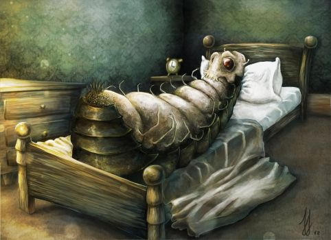
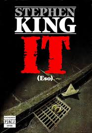
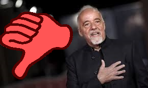
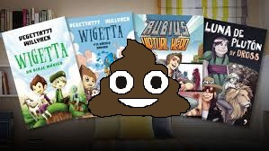

H.P Lovecraft y "El Horror Cosmico"

Este Articulo presenta una sintesis argumental sobre la novela "La Metamorfosis" del autor Franz Kafka. En este se presentaran nuestras opiniones acerca de la obra y sus aspectos positivos y negativos. El estallido de la Primera Guerra Mundial y el fracaso de un noviazgo en el que habia depositado todas sus esperanzas señalaron el inicio de una etapa creativa prolifica. Esta novela fue llegada al publico en contra de la voluntad, puesto que, ordeno a su amigo y consejero literario Max Brod que, a su muerte quemaran todos sus manuscritos
El libro relata la historia de un hombre comun llamado Gregorio Sansa que, inexplicablemente, se convierte en una cucaracha, y relata como ahora nuestro protagonista debe acostumbrarse a sus nuevos cuerpo y vida
 La Metamorfosis
Este Articulo presenta una sintesis argumental sobre la novela "La Metamorfosis" del autor Franz Kafka. En este se presentaran nuestras opiniones acerca de la obra y sus aspectos positivos y negativos.
 It (Stephen King)
It es una de las obras mas conocidas del escritor estadounidense Stephen King, la cual, a pesar de lo que muchos crean no trata solo de un payaso que asesina niños, no solo de una araña, es eso, aquello, tu mayor miedo, aquello que te aterra por las noches, un ente que atormenta al pueblo de Derry, especialmente con los niños protagonistas, que posteriormente veremos ya adultos, personajes profundos, que tienen sus miedos y complejos. Esta historia sin duda nos provee momentos inolvidables, pero tambien de muertes que erizan la piel. Ademas, King demuestra en estas de 1500 paginas...
 Paulo Coelho: ¿Por que no me gusta?
Para aquellos que haya vivido debajo de una piedra durante los ultimos años (No, no el rio, Da Bum Tss) Paulo Coelho es un señor brasileño de 69 años (Dato: Tiene la misma edad que Stephen King), Tambien conocido como el creador de las frases que comparte tu tia en Facebook. "Cuando se quiere algo, todo el universo conspira para que realices tu deseo", Una de las frases mas populares de este escrito, ya que segun el, si tienes pensamientos positivos, el regimen supremo intergalactico de unicornios bajara de sus tronos fabricados de arcoiris ubicados en el cielo de un planeta sostenido por elefantes que se posan sobre el caparazon de una tortuga gigante...
 Libros de Youtubers: Una breve opinion
¿Acaso has visto libros que tienen autores con nombres extraños y portadas con alguien en el medio que llama mucho la atencion? ¿O reseñas de los mismos en Youtube cuyos locutores son niños o adolescentes que idolatran a la persona que escribio el relato? Bueno, pues posiblemente, amigo lector, tienes a la vista un Libros de Youtuber, que son, como dice su nombre, historias supuestamente "escritas" por el tipo que te habla en aquella plataforma para ver videos, las comillas porque rara vez...